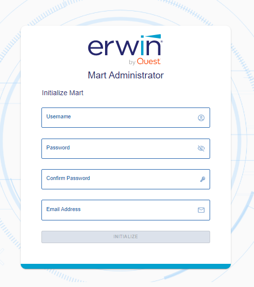

Back to Top
Back to Top
When you access the Mart database through erwin Mart Administrator for the first time, you must initialize the database. You can initialize the database using a database authenticated user or a Windows-authenticated user.
Before you proceed, verify that you have installed a DBMS, created the Mart database and run the initial queries. If the Mart is already initialized, the Login page appears.
When you open erwin Mart Administrator for the first time, the Initialize Mart web page appears.
Follow these steps:
A Windows command prompt window appears and indicates when the server starts.
erwin Mart Administrator opens in your default browser.

Defines the user name with which you want to access the Mart. If you are using a Windows-authenticated user, enter the name in the <domain name>/<user name> format.
Defines the password for the user name.
Confirms the password that you entered in the previous field.
Defines the email address for the user account that you are creating.
The user name is added as an administrator of Mart, Mart is initialized, and the Login web page appears. Initializing is a one-time task. After Mart is initialized, the user who initialized must log in first. Later, any other user who wants to use erwin Mart Administrator can log in.
The user name that is entered here is an application level user and not a database user. Remember the password that you have entered here, because without the password you cannot log in to erwin Mart Administrator for the first time.
In the previous releases, only a server user was allowed to initialize a Mart. From release r9.6, a Windows-authenticated user can also initialize a Mart. Further, a Windows-authenticated user can log in to a Mart as a Windows user.
To initialize a Mart with a Windows-authenticated user, follow these steps:
To log in as a Windows-authenticated user, follow these steps:
This procedure describes how to enable a Windows-authenticated user log in to a Mart that is already initialized. Use this procedure if the Mart is initialized with either a server user or a Windows-authenticated user.
Now the Windows-authenticated user can log in to erwin Mart Administrator by providing the user name in the <domain name>/<user name> format.
A local Windows user who does not belong to a domain or who is not part of an Active Directory cannot log in to the Mart as a Windows user.